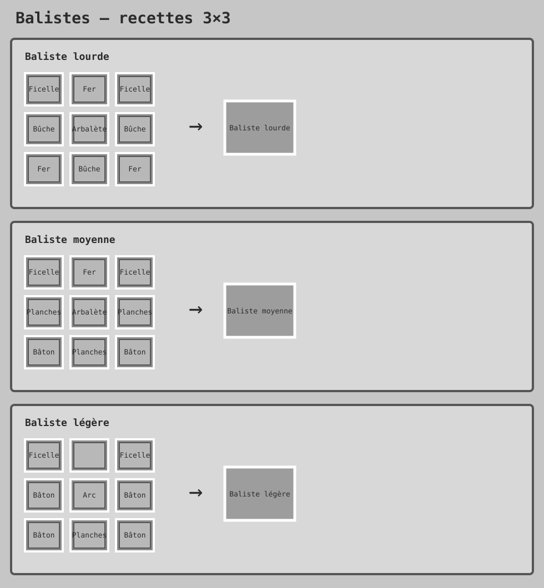
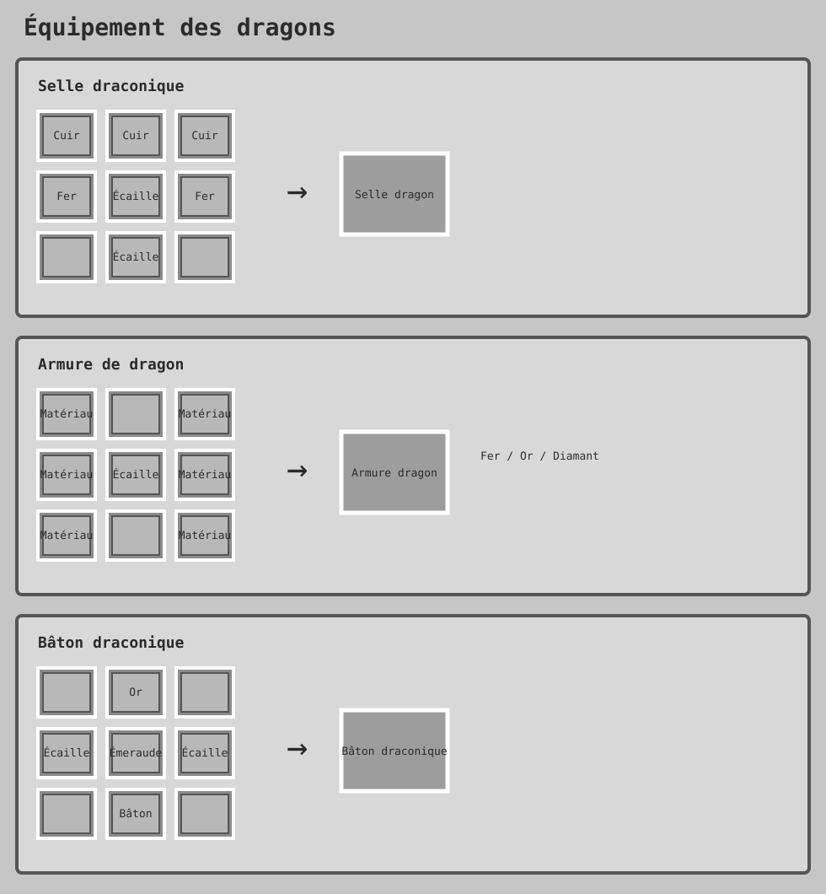
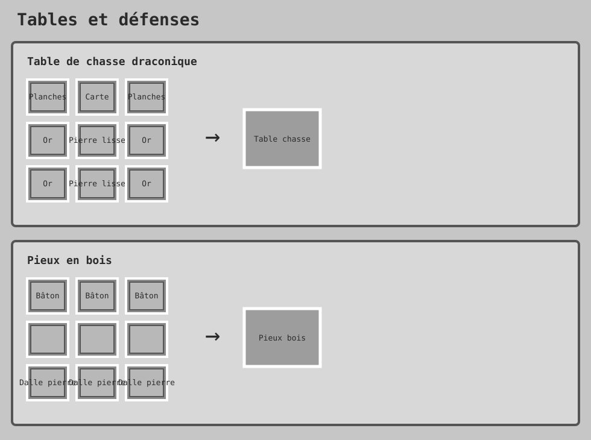

Contenu du mod
Crafts principaux
Les grilles ci-dessous reproduisent les emplacements déclarés dans les recettes JSON du mod.



Dragons
Le JAR enregistre trois dragons : rouge, vert et bleu. Il contient aussi leurs œufs, leur éclosion, leurs ordres, leur équipement, leur inventaire, leurs attaques et leurs antres.
L'analyse détaillée de chaque comportement est en cours et sera ajoutée uniquement lorsqu'il est vérifié dans le code.
Balistes
| Variante | Dégâts de base | Rechargement | Portée |
|---|---|---|---|
| Lourde | 22 | 40 ticks | 16 |
| Moyenne | 14 | 80 ticks | 14 |
| Légère | 8 | 40 ticks | 12 |
Valeurs lues dans BallistaVariant.class. Elles restent à confirmer en conditions réelles de jeu.